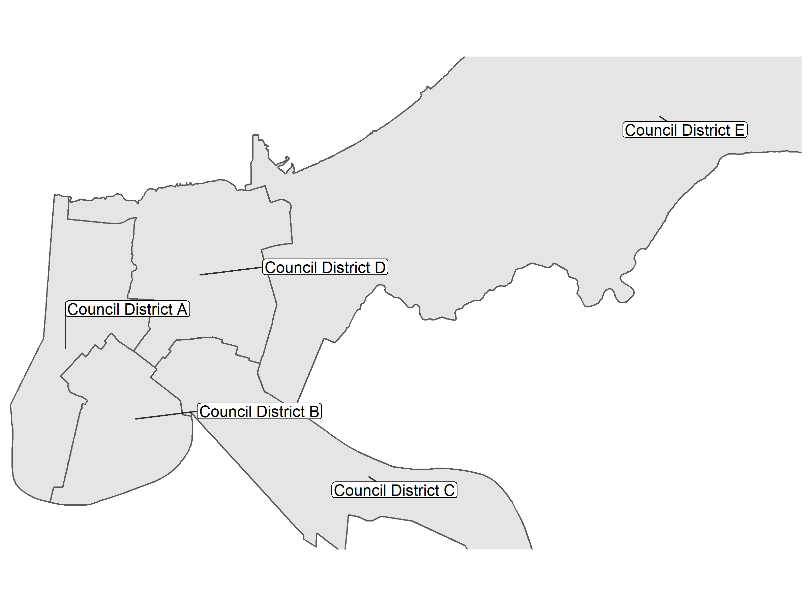
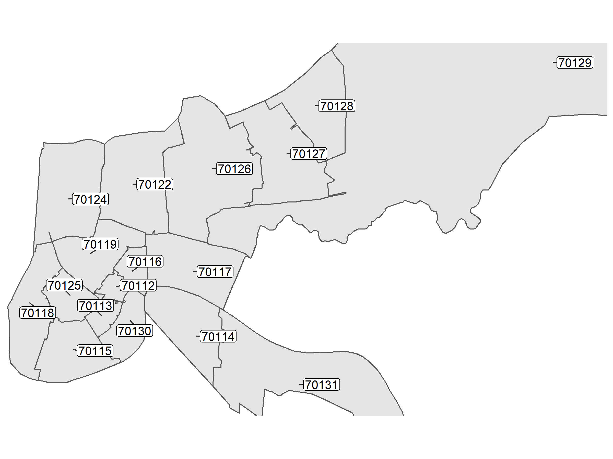
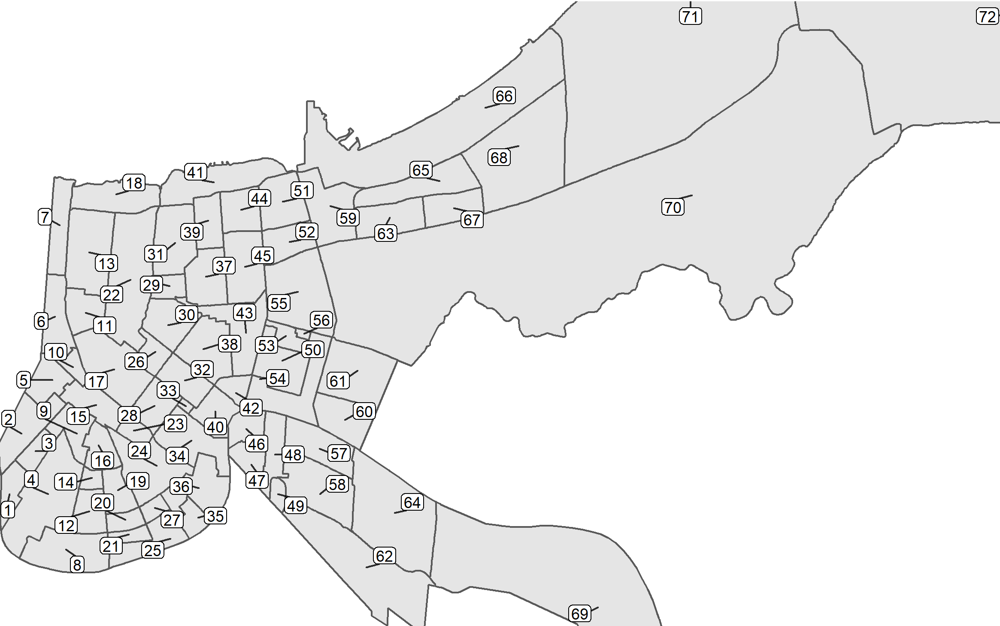

5 Spatial Data Sources
5.1 City Council District

Figure 5.1: City Council Districts
5.2 Zip Code Tabulation Areas
New Orleans Zip Code Tabulation Areas were derived from the City of New Orleans Open Data Portal at the following web address: https://data.nola.gov/Geographic-Base-Layers/Zip-Code-Tabulation-Areas-2010/rgeq-44vf

Figure 5.2: Zip Code Tabulation Areas
5.3 Neighborhoods

Figure 5.3: Neighborhoods
Figure 5.4: Neighborhoods